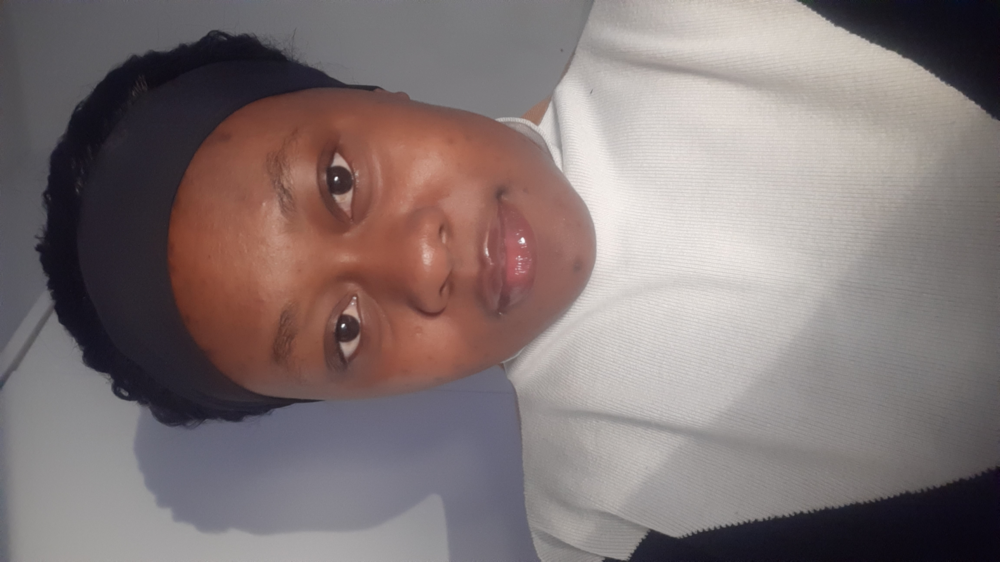
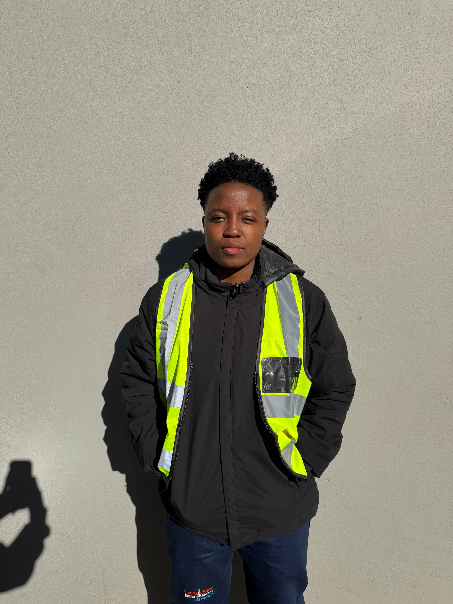

Roadway and Stormwater Department

CN Tsoeueamakoa
Mobility Design
BSc Civil Engineering
Final-year student at the University of Johannesburg who is experienced in Transportation Engineering, AutoCAD, and Geotechnical studies.
Leads roadway infrastructure and strategies.

RA Makaringe
Access Design
BSc Civil Engineering
Final-year student at the University of Johannesburg who is experienced in Transportation Engineering, AutoCAD, and Geotechnical studies.
Leads roadway infrastructure and strategies.

K Masinti
Stormwater Design
BSc Civil Engineering
Final-year student at the University of Johannesburg who is experienced in Transportation Engineering, Water Reticulation, AutoCAD, and Epanet.
Leads roadway and water flow infrastructure and strategies.